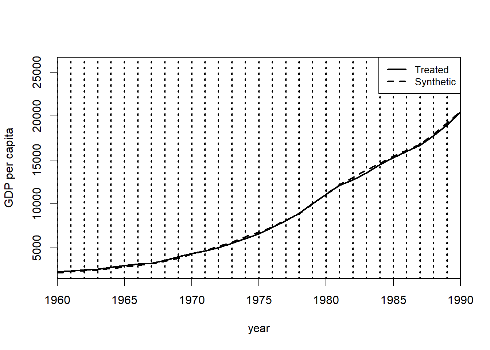

salud <- read_csv("../files/salud_peru.csv") %>%
filter(formal==0) %>%
mutate(ifh_norm=ifh-corte,
abajo_corte=ifelse(ifh<=corte, 1, 0))Respuestas a la tarea 4
Pregunta 1
Los datos del archivo salud_peru.csv contienen información de una encuesta en hogares realizada en Perú. Un programa del gobierno otorgó un seguro de salud para cubrir a hogares de trabajadores informales y pobres, típicamente excluidos de los servicios de salud. Para ello, se uso un índice de ingreso (IFH), expresado en soles, para determinar la elegibilidad. Aquellos hogares con un IFH menor o igual a 55 soles son considerados pobres. Se desea estimar el efecto del programa en la probabilidad de recibir algún tipo de anteción médica, curative, y sobre la probabilidad de recibir algún tipo de asistencia médica en un hospital o con un doctor, hospinter. La columna ifh contiene el indicador del ingreso.
[10 puntos] Genere una gráfica donde muestre evidencia de una discontinuidad en la variable curative para aquellos hogares que recibieron los beneficios del programa. Debe usar solo a los trabajadores informales, formal==0. Primero, realice la gráfica con una ventana de 100 soles a la izquierda y 100 soles a la derecha del corte de elegibilidad y en la que cada punto represente la media de la variable curative en bins de 5 soles. Agregue una línea de regresión lineal para cada lado del corte de elegibilidad.
Nota: Esta pregunta estuvo basada en el estudiod de Bernal, Carpio & Klein (2017).1
Construimos un indicador de elegibilidad:
Partimos la muestra en grupos de cinco soles:
salud <- salud %>% mutate(bin5=cut(ifh, breaks = c(seq(from=0, to=100, by=5))))Construimos la proporción con curative==1 en cada grupo:
salud5 <- salud %>% group_by(bin5) %>% summarise(curative=mean(curative, na.rm=T)) %>% ungroup() salud5 <- salud5 %>% mutate(bin5_num = seq(1:nrow(salud5)))Y hacemos el gráfico:
salud5 %>% ggplot(aes(x = bin5_num, y = curative)) + geom_point() + geom_smooth(method = lm, se = F, data = filter(salud5, bin5_num<=11)) + geom_smooth(method = lm, se = F, data = filter(salud5, bin5_num>11))
[5 puntos] Genere el mismo gráfico que en la parte a., pero ahora con una ventana de 2 soles a cada lado de la discontinuidad.
Siguiendo el mismo procedimiento:
salud <- salud %>% mutate(bin2=cut(ifh, breaks = c(seq(from=0, to=100, by=2)))) salud2 <- salud %>% group_by(bin2) %>% summarise(curative=mean(curative, na.rm=T)) %>% ungroup() salud2 <- salud2 %>% mutate(bin2_num = seq(1:nrow(salud2))) salud2 %>% ggplot(aes(x = bin2_num, y = curative)) + geom_point() + geom_smooth(method = lm, se = F, data = filter(salud2, bin2_num<=23)) + geom_smooth(method = lm, se = F, data = filter(salud2, bin2_num>23))[5 puntos] Genere el mismo gráfico que en la parte a., pero calcule la media de la variable curative en bins de 10 soles.
Siguiendo el mismo procedimiento:
salud <- salud %>% mutate(bin10=cut(ifh, breaks = c(seq(from=0, to=100, by=10)))) salud10 <- salud %>% group_by(bin10) %>% summarise(curative=mean(curative, na.rm=T)) %>% ungroup() salud10 <- salud10 %>% mutate(bin10_num = seq(1:nrow(salud10))) salud10 %>% ggplot(aes(x = bin10_num, y = curative)) + geom_point() + geom_smooth(method = lm, se = F, data = filter(salud10, bin10_num<=5)) + geom_smooth(method = lm, se = F, data = filter(salud10, bin10_num>5))[5 puntos] Ahora use rdplot del paquete rdrobust para construir el mismo gráfico.
Podemos usar rdplot para construir el gráfico, lo que nos permite seleccionar de manera óptima el número de ventanas en las que se construirá la proporción de personas que recibieron atención médica.
(rdplot(y = salud$curative, x = salud$ifh_norm, c=0, p=1))[1] "Mass points detected in the running variable."
Call: rdplot Number of Obs. 4161 Kernel Uniform Number of Obs. 1786 2375 Eff. Number of Obs. 1786 2375 Order poly. fit (p) 1 1 BW poly. fit (h) 52.680 45.000 Number of bins scale 1.000 1.000[10 puntos] Estime la versión más básica de un modelo de regresión discontinua para el efecto del programa sobre hospinter. Reporte el coeficiente estimado del efecto del tratamiento y su significancia estadística. Use una ventana de 20 soles en el IFH antes y después del corte de elegibilidad. Interprete sus resultados.
r1 <- lm(hospinter ~ ifh_norm + abajo_corte, data=filter(salud, ifh_norm>=-20 & ifh_norm <=20)) modelsummary(models = list('20 soles'=r1), output = 'gt', stars = c('***' = .01, '**' = .05, '*' = 0.1), vcov = c("HC1"), fmt = 3, coef_map = 'abajo_corte', gof_map = "nobs")20 soles abajo_corte 0.047** (0.019) Num.Obs. 2799 * p < 0.1, ** p < 0.05, *** p < 0.01 Con un modelo lineal y una dummy de elegibilidad, estimamos un efecto de 4.7 puntos porcentuales en la probabilidad de recibir algún tipo de asistencia médica.
[5 puntos] Estime la misma especificación que en la parte d., pero ahora con una ventana de 10 soles en el IFH. Interprete sus resultados.
Al restringir la ventana de análisis obtenemos un efecto estimado de 6.6 puntos porcentuales:
r2 <- lm(hospinter ~ ifh_norm + abajo_corte, data=filter(salud, ifh_norm>=-10 & ifh_norm <=10)) modelsummary(models = list('20 soles'=r1, '10 soles'=r2), output = 'gt', stars = c('***' = .01, '**' = .05, '*' = 0.1), vcov = c("HC1", "HC1"), fmt = 3, coef_map = 'abajo_corte', gof_map = "nobs")20 soles 10 soles abajo_corte 0.047** 0.066** (0.019) (0.026) Num.Obs. 2799 1654 * p < 0.1, ** p < 0.05, *** p < 0.01 [5 puntos] Regrese a una ventana de 20 soles como en la parte d., pero ahora permita un coeficiente distinto para el IFH antes y después del corte, y un polinomio de orden 2 para la variable de asignación. Interprete sus resultados.
Permitiendo pendientes distintas y con un polinomio cuadrático de la variable de asignación obtenemos un efecto estimado de 6.8 puntos porcentuales:
r3 <- lm(hospinter ~ ifh_norm*abajo_corte + I(ifh_norm^2)*abajo_corte, data=filter(salud, ifh_norm>=-20 & ifh_norm <=20)) modelsummary(models = list('20 soles'=r1, '10 soles'=r2, '20 soles diferentes pendientes'=r3 ), output = 'gt', stars = c('***' = .01, '**' = .05, '*' = 0.1), vcov = c("HC1", "HC1", "HC1"), fmt = 3, coef_map = 'abajo_corte', gof_map = "nobs")20 soles 10 soles 20 soles diferentes pendientes abajo_corte 0.047** 0.066** 0.068** (0.019) (0.026) (0.030) Num.Obs. 2799 1654 2799 * p < 0.1, ** p < 0.05, *** p < 0.01 Como nota, los autores estiman el siguiente modelo para obtener los resultados reportados en la tabla 1 del artículo de 7.8 puntos porcentuales. Ellos introducen una serie de controles, lo cual no es raro en los análisis de diseños con discontinuidades:
r4 <- lm(hospinter ~ ifh_norm + abajo_corte + ifh_norm*abajo_corte + mujer + edad + educ + mieperho + hhmujer + high*ifh_norm + high*abajo_corte , data=filter(salud, ifh_norm>=-20 & ifh_norm <=20)) modelsummary(models = list('20 soles'=r1, '10 soles'=r2, '20 soles diferentes pendientes'=r3, 'Publicación'=r4), output = 'gt', stars = c('***' = .01, '**' = .05, '*' = 0.1), vcov = c("HC1", "HC1", "HC1", "HC1"), fmt = 3, coef_map = 'abajo_corte', gof_map = "nobs")20 soles 10 soles 20 soles diferentes pendientes Publicación abajo_corte 0.047** 0.066** 0.068** 0.078*** (0.019) (0.026) (0.030) (0.028) Num.Obs. 2799 1654 2799 2799 * p < 0.1, ** p < 0.05, *** p < 0.01 [5 puntos] Use rdrobust para estimar el efecto usando un polinomio de orden 2 y una regresión local no paramétrica. Use algún selector de ancho de banda óptimo.
Podemos usar rdrobust para estimar el efecto con la selección óptima del ancho de ventana:
summary(rdrobust(y=salud$hospinter, x=salud$ifh, c=55, p=2, bwselect='mserd', vce = 'hc3'))Sharp RD estimates using local polynomial regression. Number of Obs. 4161 BW type mserd Kernel Triangular VCE method HC3 Number of Obs. 1786 2375 Eff. Number of Obs. 980 1528 Order est. (p) 2 2 Order bias (q) 3 3 BW est. (h) 16.585 16.585 BW bias (b) 24.402 24.402 rho (h/b) 0.680 0.680 Unique Obs. 252 246 ============================================================================= Method Coef. Std. Err. z P>|z| [ 95% C.I. ] ============================================================================= Conventional -0.082 0.035 -2.313 0.021 [-0.151 , -0.012] Robust - - -2.229 0.026 [-0.168 , -0.011] =============================================================================El efecto estimado es de 8.2 puntos porcentuales. La venta seleccionada de manera óptima es de 16.585 soles usando el criterio del error cuadrático medio.
Pregunta 2
El archivo data_germany.csv contiene los datos empleados por Abadie, Diamond y Hainmueller (2015) para estimar el efecto de la reunificación de Alemania en el PIB per cápita (gdp) usando el método de control sintético.
[15 puntos] Estime el control sintético del PIB per cápita de Alemania del Oeste usando como grupo donador a los 21 países incluidos en los datos. Esto es, encuentre la matriz \(W\) que otorga pesos a las distintas regiones usando una serie de predictores observables. Para este propósito, use como predictores el promedio de las siguientes variables para el periodo 1981-1990:
- La apertura comercial, trade
- La tasa de inflación, infrate
Además, use como predictores especiales los siguientes valores:
- El promedio de la participación de la industria en el PIB, industry, de 1981 a 1990
- El promedio de la escolaridad, schooling, de 1980 y 1985
- La tasa de inversión, invest80, de 1980
Note que Alemania Occidental está identificada con el número 7 de la columna index. Realice el procedimiento de optimización para minimizar las discrepancias entre la unidad tratada y su sintético usando el periodo 1960-1989.
¿Qué regiones y con qué pesos contribuyen a construir la Alemania Occidental sintética? Use el procedimiento que vimos en clase, aunque no podrá replicar exactamente los resultados del artículo, por ahora. Notará esto en los valores que obtenga para \(W\).
Preparamos los datos:
Implementamos el método:
synth.out <- synth(data.prep.obj = dataprep.out)X1, X0, Z1, Z0 all come directly from dataprep object. **************** searching for synthetic control unit **************** **************** **************** MSPE (LOSS V): 7864.803 solution.v: 0.8945633 0.0009508237 2.9249e-06 0.02077729 0.003490665 0.08021497 solution.w: 0.1523837 0.05058415 0.4324535 0.006207241 0.006421631 0.007796306 0.009553204 0.007346295 0.02681235 0.1893084 0.07624671 0.005630577 0.005179397 0.00672163 0.009776595 0.007578245synth.tables <- synth.tab(dataprep.res = dataprep.out, synth.res = synth.out)Recuperamos los pesos \(V\) y \(W\):
print(synth.tables)$tab.pred Treated Synthetic Sample Mean gdp 15808.900 15807.087 13669.381 trade 56.778 59.595 59.831 infrate 2.595 4.239 7.617 special.industry.1981.1990 34.538 34.435 33.794 special.schooling.1980.1985 55.500 54.116 38.659 special.invest80.1980 27.018 27.025 25.895 $tab.v v.weights gdp 0.895 trade 0.001 infrate 0 special.industry.1981.1990 0.021 special.schooling.1980.1985 0.003 special.invest80.1980 0.08 $tab.w w.weights unit.names unit.numbers 1 0.152 USA 1 2 0.051 UK 2 3 0.432 Austria 3 4 0.006 Belgium 4 5 0.006 Denmark 5 6 0.008 France 6 8 0.010 Italy 8 9 0.007 Netherlands 9 10 0.027 Norway 10 12 0.189 Switzerland 12 14 0.076 Japan 14 16 0.006 Greece 16 18 0.005 Portugal 18 19 0.007 Spain 19 20 0.010 Australia 20 21 0.008 New Zealand 21 $tab.loss Loss W Loss V [1,] 6.177519e-05 7864.803Los autores obtienen resultados ligeramente diferentes en términos de \(W\) pues su forma de escoger \(V\) es también distinta. Sin embargo, cualitativamente, los resultados se sostienen.
[10 puntos] Obtenga un gráfico en donde represente las series de tiempo del PIB per cápita de Alemania Occidental que efectivamente se realizó, la de su correspondiente control sintético y la del promedio simple del resto de países.
Recuperamos las series originales y sintética del País Vasco:
Ys <- dataprep.out$Y0plot %*% synth.out$solution.w Y1 <- dataprep.out$Y1plotPor otro lado, podemos calcular el promedio sobre todas las regiones de la matriz \(Y0plot\):
Y0media <- matrix(rowMeans(dataprep.out$Y0plot))Y ponemos todo en un data frame para graficarlo fácilmente:
data.plot <- as.data.frame(cbind(Y1,Ys, Y0media)) colnames(data.plot) <- c("Y1","Ys","Y0media") data.plot <- data.plot %>% mutate(year=seq(from=1960, to=2003)) #Gráfico de series data.plot %>% ggplot(aes(x=year))+ geom_line(aes(y=Y1, linetype = "Alemania Occidental")) + geom_line(aes(y=Ys, linetype = "Sintética"))+ geom_line(aes(y=Y0media, linetype = "Resto de países"))+ geom_vline(xintercept=1990, color = "black", size=1, linetype="dashed")+ scale_x_continuous(breaks=seq(1960, 2003, 5))+ labs(x = "Año", y = "PIB per capita", linetype = "Legend") + scale_linetype_manual(values = c("Alemania Occidental"="solid", "Sintética"="dashed", "Resto de países"="dotted"))Alemania Occidental era más rica que el promedio países en el momento de la reunificación. Durante el periodo post a la reunificación, los demás países se acercaron a la trayectoria de Alemania Occidental.
[10 puntos] Genere una gráfica de brecha que muestre el efecto del terrorismo sobre el PIB per cápita. La brecha es la diferencia entre la serie de tiempo realizada y su contraparte sintética.
El gráfico de brechas se obtiene fácilmente con las funciones de Synth:
gaps.plot(synth.res = synth.out, dataprep.res = dataprep.out, tr.intake = 1990, Ylab = c("GDP per capita"), Xlab = c("year"), Ylim = c(-4000,4000))El gráfico de las trayectorias, en caso de requerirse, es:
path.plot(synth.res = synth.out, dataprep.res = dataprep.out, tr.intake = 1960:2003, Ylab = c("GDP per capita"), Xlab = c("year"))[15 puntos] Ahora seguiremos la estrategia de estimación que siguen los autores en el artículo. Mostraremos que, con su método, podemos obtener el gráfico de placebo en el tiempo de la figura 4 del artículo.
Los autores siguen un procedimiento de validación cruzada o cross-validation, muy usado también en ciencia de datos. Para ello, dividen la muestra pre intervención en un periodo de entrenamiento y otro de validación. La idea es obtener \(V\) en el periodo de entrenamiento y usar dicho vector como pesos en la estimación de \(W\) en el periodo de validación.
Primero, estime el control sintético para el periodo de validación, usando los siguientes predictores y periodos de optimización:
special.predictors = list( list("industry",1971, c("mean")), list("schooling",c(1960,1965), c("mean")), list("invest60" ,1980, c("mean"))) time.predictors.prior = 1960:1964 time.optimize.ssr = 1965:1975 time.plot = 1960:1990Posteriormente, use el vector \(V\) obtenido con el procedimiento de entrenamiento anterior para estimar el control sintético, pero ahora con los siguientes predictores y periodos de referencia (el periodo de validación). Para indicar una matriz \(V\) en específico explore las opciones de la función synth.
special.predictors = list( list("industry" ,1971:1975, c("mean")), list("schooling",c(1970,1975), c("mean")), list("invest70" ,1980, c("mean")) ) time.predictors.prior = 1965:1975 time.optimize.ssr = 1960:1975 time.plot = 1960:1990Finalmente, obtenga el gráfico de trayectorias y compruebe que replica la figura 4 del artículo.
Usando los predictores y periodos indicados estimamos el control sintético en el periodo de entrenamiento:
dataprep.out <- dataprep( foo = GDP, predictors = c("gdp","trade","infrate"), dependent = "gdp", unit.variable = 1, time.variable = 3, special.predictors = list( list("industry",1971, c("mean")), list("schooling",c(1960,1965), c("mean")), list("invest60" ,1980, c("mean")) ), treatment.identifier = 7, controls.identifier = setdiff(unique(GDP$index), 7), time.predictors.prior = 1960:1964, time.optimize.ssr = 1965:1975, unit.names.variable = "country", time.plot = 1960:1990 )Missing data- treated unit; predictor: infrate ; for period: 1960 We ignore (na.rm = TRUE) all missing values for predictors.op. Missing data - control unit: 1 ; predictor: infrate ; for period: 1960 We ignore (na.rm = TRUE) all missing values for predictors.op.synth.out <- synth( data.prep.obj=dataprep.out )X1, X0, Z1, Z0 all come directly from dataprep object. **************** searching for synthetic control unit **************** **************** **************** MSPE (LOSS V): 3242.413 solution.v: 0.2193154 0.2646532 0.2342373 0.01563207 3.765e-07 0.2661616 solution.w: 4.19742e-05 0.0003168 0.0001057279 0.03729636 2.5183e-06 3.95558e-05 0.3089249 2.606e-07 2.03e-08 0.1228327 0.003407046 8.4663e-06 6.1837e-06 3.30363e-05 0.5269763 8.2179e-06Con la matriz \(V\) obtenida antes, resolvemos el problema para el periodo de validación. Notemos que en la función synth especificamos custom.v=as.numeric(synth.out$solution.v).
dataprep.out <- dataprep( foo = GDP, predictors = c("gdp","trade","infrate"), dependent = "gdp", unit.variable = 1, time.variable = 3, special.predictors = list( list("industry" ,1971:1975, c("mean")), list("schooling",c(1970,1975), c("mean")), list("invest70" ,1980, c("mean")) ), treatment.identifier = 7, controls.identifier = setdiff(unique(GDP$index), 7), time.predictors.prior = 1965:1975, time.optimize.ssr = 1960:1975, unit.names.variable = "country", time.plot = 1960:1990 ) synth.out <- synth( data.prep.obj=dataprep.out, custom.v=as.numeric(synth.out$solution.v) )X1, X0, Z1, Z0 all come directly from dataprep object. **************** optimization over w weights: computing synthtic control unit **************** v weights supplied manually: computing synthtic control unit **************** **************** **************** MSPE (LOSS V): 14206.42 solution.v: 0.2193154 0.2646532 0.2342373 0.01563207 3.765e-07 0.2661616 solution.w: 0.1488498 1.15e-08 0.659725 2e-10 3.29e-08 5.0562e-06 3.556e-07 4.6e-09 1.472e-07 0.1594838 0.03193434 6.431e-07 1.9e-09 4.8e-08 6.837e-07 4.46e-08Notamos que el gráfico de trayectorias replica la figura 4 del artículo:
path.plot(synth.res = synth.out, dataprep.res = dataprep.out, tr.intake = 1960:1990, Ylab = c("GDP per capita"), Xlab = c("year"))
Si seguimos un procedimiento de validación cruzada para la estimación del control sintético con la muestra completa, podemos replicar el resultado principal del artículo.
Notas
Bernal, N., Carpio, M. A., & Klein, T. J. (2017). The effects of access to health insurance: evidence from a regression discontinuity design in Peru. Journal of Public Economics, 154, 122-136.↩︎